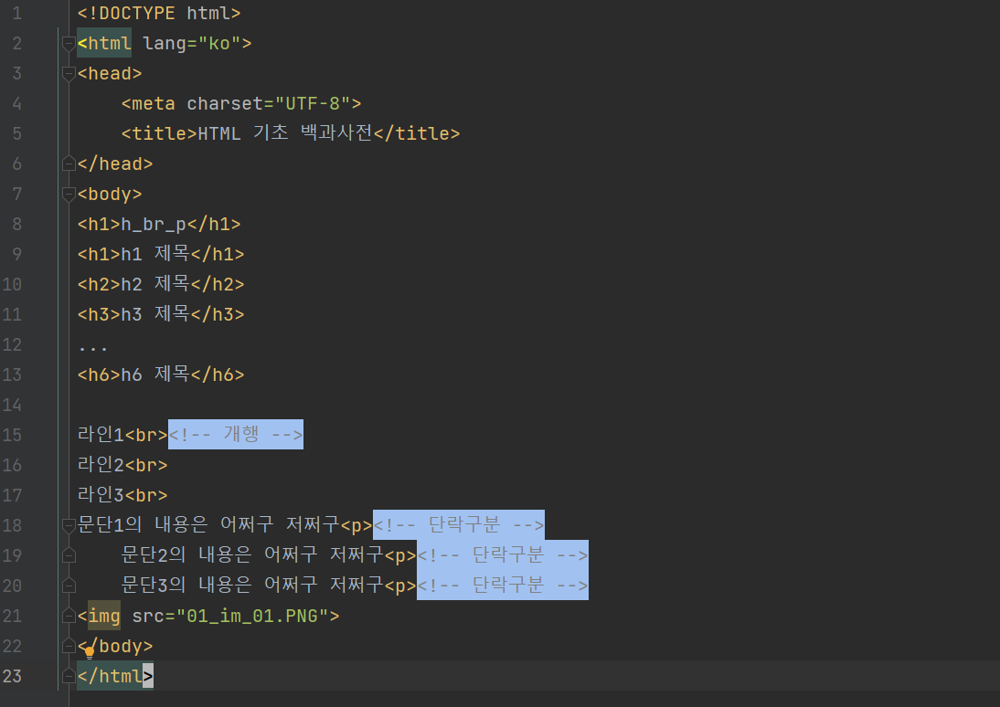

h_br_p
h1 제목
h2 제목
h3 제목
...h6 제목
라인1라인2
라인3
문단1의 내용은 어쩌구 저쩌구
문단2의 내용은 어쩌구 저쩌구
문단3의 내용은 어쩌구 저쩌구

blockquote
제주 이색 여행지
야외 텐트를 닮은 건축물 "테쉬폰"
아일랜드 출신 임피체 신부가 1954년 제주에 오면서 목장 숙소로 짓기 시작한 후 사료공장, 성당으로 활용됐습니다.
제주에서 점차 다른 지방으로 보급됐지만 현재 제주에만 건축물이 남아있는데,
국내 근현대 건축사의 한 페이지를 보여주는 가치를 지닌다고 전문가들은 평가합니다.
성이시돌목장은 제주특별자치도 제주시 한림읍 금악리에 있는 목장이다. 특히 이시돌목장은 제주 지역 최초의 전기업목장(全企業牧場) 으로 1961년 11월 말 제주시 한림읍 금악리에 세워 양돈 사업을 실시하였으며 면양을 사육하였던 것으로 알려져 있다. 이시돌목장의 특색있는 건축양식으로 테쉬폰도 유명하다. (출처:향토문화전자대전)